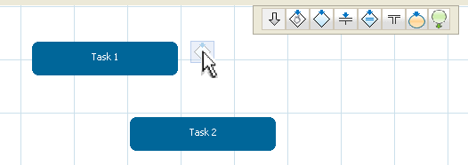
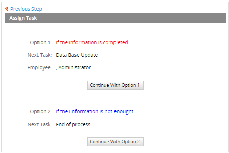
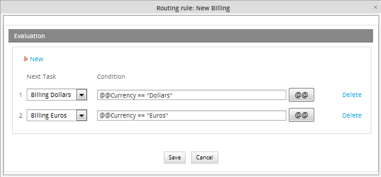
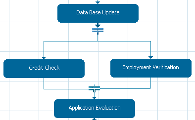
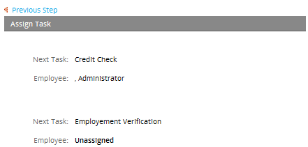
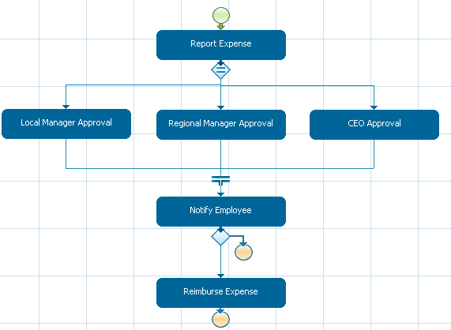
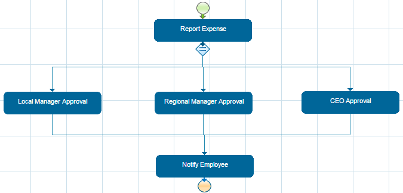
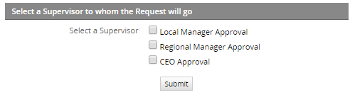

Defining Routing Rules
Routing rules, which are also known as derivation rules, control workflow between tasks in a process. In other words, they determine which is the first task in a process and how work moves to the subsequent tasks, and so on until the process ends. Routing rules can move the workflow along a single path or divide the workflow into multiple threads. They can also evaluate conditions to determine which are the subsequent task(s) and even send the workflow down subprocesses, which are separate workflows with their own set of cases.
Types of Routing Rules:
 Sequential: When one task is completed, a sequential routing rule will move the workflow directly to subsequent task(s).
Sequential: When one task is completed, a sequential routing rule will move the workflow directly to subsequent task(s). Selection: A selection routing rule allows the user assigned to the task to manually select the subsequent task(s) to be performed in the process.
Selection: A selection routing rule allows the user assigned to the task to manually select the subsequent task(s) to be performed in the process. Evaluation: An evaluation routing rule uses a condition (which is a true or false expression in PHP) to decide whether the workflow moves to subsequent task(s).
Evaluation: An evaluation routing rule uses a condition (which is a true or false expression in PHP) to decide whether the workflow moves to subsequent task(s). Parallel (Fork): A parallel (fork) routing rule divides the workflow into two or more parallel tasks.
Parallel (Fork): A parallel (fork) routing rule divides the workflow into two or more parallel tasks. Parallel By Evaluation (Fork): A parallel by evaluation routing rule uses a condition to decide whether to divide the workflow into two more parallel tasks.
Parallel By Evaluation (Fork): A parallel by evaluation routing rule uses a condition to decide whether to divide the workflow into two more parallel tasks. Parallel (Join): A parallel (join) routing unites multiple parallel tasks in the workflow that had previously been divided by a parallel (fork) routing. All the parallel tasks must be completed before a parallel routing can take place.
Parallel (Join): A parallel (join) routing unites multiple parallel tasks in the workflow that had previously been divided by a parallel (fork) routing. All the parallel tasks must be completed before a parallel routing can take place.
-
Note: To ensure that the workflow continues all of the sub-threads need a parallel join.
to connect them to the next task.
- Only when all the true evaluated task(s) have been finished the subsequent task will start. If it is necessary, use a dummy task to enclose the remaining path.
 End of Process: End of process marks where to terminate the workflow.
End of Process: End of process marks where to terminate the workflow. Starting Task: Starting task marks where to begin a process.
Starting Task: Starting task marks where to begin a process.
Applying routing rules
Routing rules are applied to specific tasks (and ProcessMaker even treats them as task objects). To apply a routing rule to a task, click on an icon in the Routing Rules Toolbar and drag the icon to the task while still holding down on the mouse button. Release the mouse button over a task to attach the routing rule to that task.

Then drag the routing rule, which is shown as a red connector dot, to the subsequent task while still holding down on the mouse button, then release over the subsequent task to connect the two tasks.


If the work can flow down multiple threads (paths) in the process, drag and drop additional routing rules from the toolbar to connect them as well.

To change a routing rule to a different type, simple drag a routing rule from the toolbar and drop it on the task with an existing routing rule. When asked "Are you sure you want to change the derivation rule?", click Accept to change the type of routing rule.
Once a routing rule connects tasks, it can be edited by either clicking on the routing rule symbol in the Process Map or by right clicking on a task and selecting the option Derivation Rules from the menu.

Starting Task Routing Rule
Every process must have at least one  Starting Task routing rule which indicates which task should start the process. Either drag and drop the
Starting Task routing rule which indicates which task should start the process. Either drag and drop the  icon from the toolbar to a task or right click on the task and select the option Properties from the dropdown menu. Under the Definition tab, mark the checkbox Starting Task.
icon from the toolbar to a task or right click on the task and select the option Properties from the dropdown menu. Under the Definition tab, mark the checkbox Starting Task.

Processes can have multiple starting tasks and even multiple work paths. For instance, an organization with a Sales department might want to start its "Invoice Process" at two different points: either by first contacting the client or by first sending a quote. In addition, it might want to start the "Invoice Process" with a different work path in the Finance department. If Sales is handling the invoice, then different tasks are executed than if Finance is handling it.

If a process has multiple starting tasks, then the person who starts the case may select which task starts the process. In the dropdown box, the name of the process is provided followed by the name of the starting task in parenthesis.

End of Process Routing Rule
All processes must have at least one task with an  End of Process routing rule to terminate the process. There can be multiple ending points to any process. To add an End of Processrouting rule to a task, drag and drop the
End of Process routing rule to terminate the process. There can be multiple ending points to any process. To add an End of Processrouting rule to a task, drag and drop the  icon from the toolbar to a task or right click on a task which has an evaluation or selection routing rule and select the option Derivation Rules. Click the New link to add a routing rule, then in the dropdown box, select the option "End of process".
icon from the toolbar to a task or right click on a task which has an evaluation or selection routing rule and select the option Derivation Rules. Click the New link to add a routing rule, then in the dropdown box, select the option "End of process".
Sequential Routing Rule
With a  sequential routing rule, workflow automatically flows to subsequent tasks, so no special configuration is required, after connecting the tasks.
sequential routing rule, workflow automatically flows to subsequent tasks, so no special configuration is required, after connecting the tasks.
Selection Routing Rule
A  selection routing rule allows the user assigned to the task to manually select which task will be the next in the workflow. After completing a task, the user will be presented with the available subsequent tasks and asked to choose one.
selection routing rule allows the user assigned to the task to manually select which task will be the next in the workflow. After completing a task, the user will be presented with the available subsequent tasks and asked to choose one.
For instance, if creating a process to handle billing in dollars and Euros, a selection routing rule could be used to decide whether to generate a bill in dollars or in Euros.

After adding the selection routing rule, double click on the routing rule to add "Descriptions" to the selection routing rule explaining why to choose the "Billing Dollars" and "Billing Euros" tasks.

These descriptions will help the user decide which task to choose when running a case:

How to Customize the Appearance of the Description
This routing rule allows users a customization of its description in HTML or JavaScript code on its final view when running a case.
Follow the steps below to try it out on your own process:
1.- Click on the routing rule icon:

2.- Add the HTML code (specifying a color or type of letter) after the description:

3.- Run the process:

Evaluation Routing Rule
An  evaluation routing rule uses a condition to decide whether the workflow moves to subsequent task(s). If the condition, which is a PHP expression, evaluates to true, then the workflow will move to the subsequent task. For more information on how to create conditions which will evaluate to true or false, see Using Conditions.
evaluation routing rule uses a condition to decide whether the workflow moves to subsequent task(s). If the condition, which is a PHP expression, evaluates to true, then the workflow will move to the subsequent task. For more information on how to create conditions which will evaluate to true or false, see Using Conditions.
An evaluation routing rule is commonly used to decide between multiple tasks. If all the conditions are false then a case will never complete. If all the conditions are true, then the workflow will move to all the subsequent tasks, which may not be what is desired. Therefore, it is very important to test conditions and make sure that they don't yield unexpected outcomes.
The previous example of a billing processes could also be implemented with an evaluation routing rule instead of a selection routing rule.

If a DynaForm is filled out in the "Initiate Billing" task, the user can select whether the bill will be in dollars or Euros.

The choice of dollars or is be stored in the variable @@Currency which could be used in the conditions for the routing rule. Click on the evaluate routing rule in the Process Map and add the conditions.


If a condition exists, then the problem is probably due to the fact that the condition contains an undefined variable. Verify that the variable exists, by clicking on the [ @@ ] button find the variable in the list of available variables. Remember that variable names in PHP are case sensitive.
If the variable was defined in a DynaForm, then the problem is that the values which are being entered into the DynaForm aren't being saved to variables. To allow your users to save their entered data in the Dynaform, add a Submit button to the DynaForm. To remind users to click the Submit button, go to the Properties tab of the DynaForm Designer and select the option "Show Prompt" for Next Step Link. If you want the data to be automatically saved to variables without the hassle of clicking the Submit button, select the option "Save and Continue".
Note: Sometimes, there is a problem when a condition on Evaluation Route is saved, for example take the condition below:
Save it and open it again, that will be changed into:@@Currency=="Euros"
@@Currency==\"Euros\"
That will solved switching off quotes-gpc magic_quotes_gp on php.ini configuration.
Example of how to Route a Case to the User who Started it
This example explains how to route a case to the user who first started it using an evaluation routing rule. In the example, the first task has assigned the "Manager" and "Senior Manager" groups with 3 and 5 users each. The user who starts the case requests some kind of desktop help. This request arrives to the "IT" group in the second task. The user who receives the request must provide feedback about the request the final task that brings a report of the request.
The design of the process is the following:

The process uses the trigger "SaveUser", that saves the information of the user who starts the case:
The task "Request Desktop Help" has assigned the groups "Manager" (3 users) and "Senior Manager" (5 users). The task also has the trigger "SaveUser" assigned before the assignment of the task. Finally, the assignment rule of this task is "Value Based Assignment" with the value "@@FirstUser".


After filling a request form, the route derives the request to a user of the IT group assigned in the task "Provide Feedback". In this task, the IT user gives a feedback of the problem and could return it to the first user or, if the problem is fixed, generate a report. In the Dynaform of the feedback, the user selects from the dropdown "action" whether to return the feedback to the first user (Yes) or not (No).

The evaluation routing rule evaluates the value of the dropdown. If the value is "Yes", it derives the route to the first task, to the user who made the request (the user who started the case with the value saved by the trigger "saveUser"). Else, if the value of the dropdown is "No", the route is derived to the task "Generate Report". The configuration of the routing rule is the following:

Parallel (Fork) Routing Rule
A  parallel (fork) routing rule divides the workflow in multiple threads (branches) which operate concurrently. Once the task has been completed the workflow will take different sub-threads starting at the same time. As an example, in the credit card application, where two parallel tasks will take place, because the facility officer sends a request for employment and credit checks.
parallel (fork) routing rule divides the workflow in multiple threads (branches) which operate concurrently. Once the task has been completed the workflow will take different sub-threads starting at the same time. As an example, in the credit card application, where two parallel tasks will take place, because the facility officer sends a request for employment and credit checks.

Once the parallel (fork) rules have been added, by double clicking on the routing rule you can see the following illustration. There it is possible to define more parallel tasks.

In order to ensure the workflow continues only when every parallel task is finished, they need a parallel Join  . For this reason, drag and drop the route of the first parallel task defined and connect it to the next task. Repeat this step for every task that used the parallel (fork) routing rule. The description in the parallel (fork) will show what we have in the next illustration, so we know the task has been derived two times (this will depend on the number of parallel assignation we made).
. For this reason, drag and drop the route of the first parallel task defined and connect it to the next task. Repeat this step for every task that used the parallel (fork) routing rule. The description in the parallel (fork) will show what we have in the next illustration, so we know the task has been derived two times (this will depend on the number of parallel assignation we made).

Pausing threads
Usually threads in a parallel routing rule are independent form each other, but what happen if a thread needs to be paused?.
Let's take the above example, if Credit Check task is paused, user assign to the other task, Employment Verification will be able to continue the case since threads are independent; however, the case could not be completed until the task will be unpaused, always following the definition of a Parallel routing rule.
Parallel by Evaluation (Fork) Routing Rule
A parallel by evaluation (fork) routing rule divides the workflow in multiple paths, evaluating the condition for each of the paths to determine which ones will be executed. A path will only be executed if its condition evaluates to true. If false, it won't be executed, so make sure that at least one of the conditions evaluates to true to avoid errors. For more information on how to create conditions which will evaluate to true or false, see Using Conditions.
All of the sub-paths between the parallel fork and the parallel join must finish executing, before the workflow can move on to the next task after the parallel join.
For instance, if creating a process to handle reporting expenses, where the employee will fill out a form and send it. We will use a parallel by (fork) to evaluate the report expense.

After adding the parallel by evaluation (fork), double click on the routing rule to add “Descriptions”, explaining when the task “Local Manager Approval”, “Regional Manager Approval” and/or “CEO Approval” will be started. When this conditions are being evaluated there can be more than one evaluated true, if that happen then one or more task will be started.

These descriptions will show the user the path the task will be taking, when the case is running.

Example Using Checkboxes Values in the Parallel by Evaluation Routing Rule
The next example uses a parallel by evaluation routing rule to derive the path to the next task. Nevertheless, the values evaluated in the routing rule are obtained from a checkbox group in the Dynaform of the first task. The details of how to do it are explained in the example.
The design of the process is the following:

In the task "Report Expense", at the end of the Dynaform, add the checkbox group "checkSupervisor":

The XML of the checkbox group is the following:
<en>Select a Supervisor
<option name="1">Local Manager Approval</option>
<option name="2">Regional Manager Approval</option>
<option name="3">CEO Approval</option></en>
</checkSupervisor>
Create the trigger "triggerRouting" that will recover the value selected by the user in the checkbox group:
The trigger recovers the value of the checkbox group and uses the PHP function explode() in the variable $rArray and sets it in the variable @@checkGroup.
Assign the trigger to the first task after the Dynaform is routed.
Now, configure the routing rule like the following:

The routing rule evaluates the array sent in the trigger in the variable @@checkGroup. For this, it uses the PHP function in_array() to check the value returned for the checkbox group.
The route will go to task "Local Manager Approval" if the first option of the checkbox group was selected. Remember that the value set for the first option was "1". Likewise, the route will go to "Regional Manager Approval" if the second option was chosen and to "CEO Approval" if the third option was chosen.